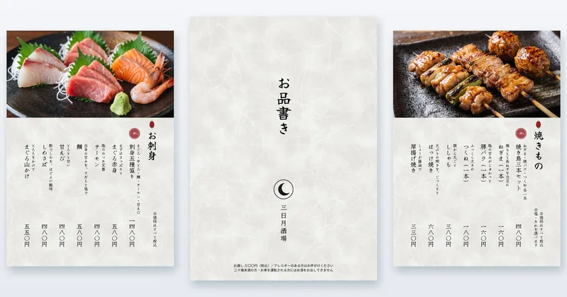
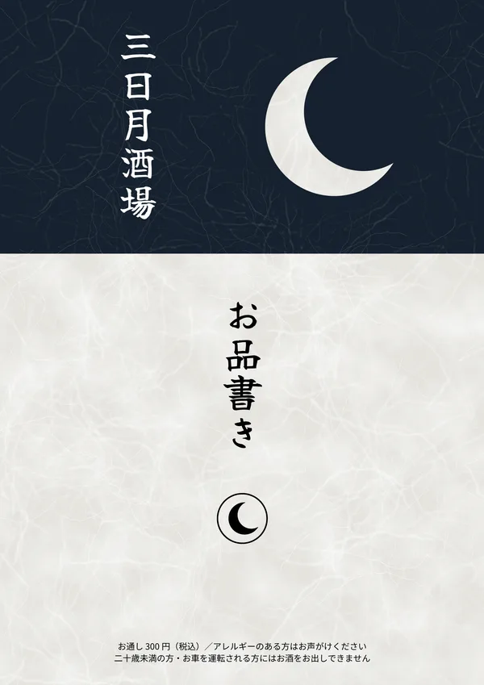
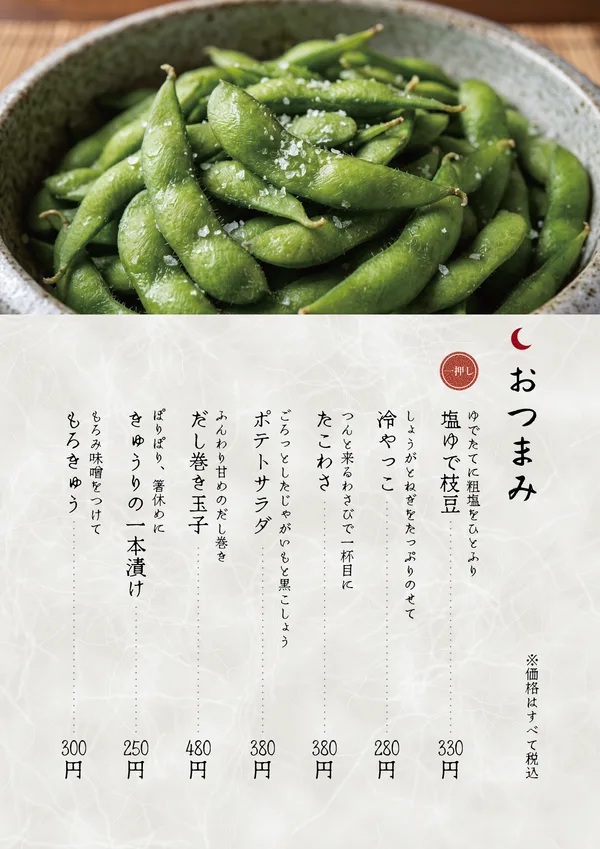
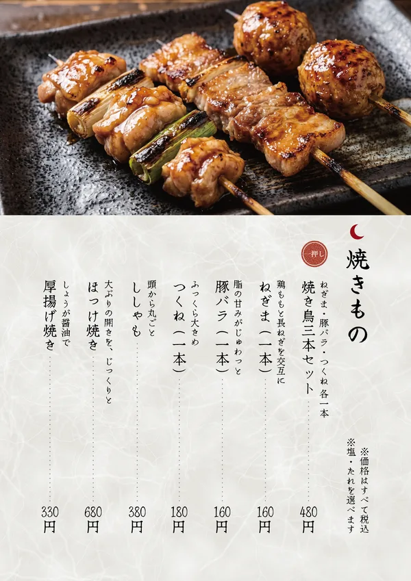
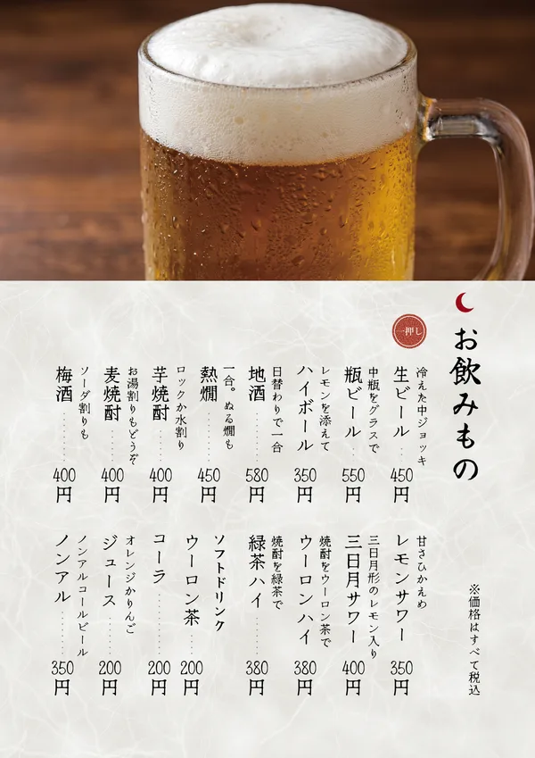

制作の解説｜メニュー表・飲食・居酒屋
居酒屋のメニュー表（A4・8ページ）
ふらっと入ったお客さまにも、
おすすめと値段がすぐ伝わるように。

※練習として制作した、架空のお店のサンプルです。店名・品書き・値段はすべて架空です。
※写真は画像生成AIで作成しています（実際のご依頼では、お店の料理写真を使います）。
Concept
課題と、制作の意図
- 課題品数の多い居酒屋のメニューは、料理名と値段が並ぶだけだと、何を頼めばいいかが伝わりにくい
- 誰に小さな個人の居酒屋と、そこにふらっと入るお客さま
- 伝えたいこと気軽に入れるお店であること。ジャンルごとのおすすめと値段が、ひと目でわかること
- コンセプト「気軽に入れる大衆居酒屋」。和紙の地と縦書きで落ち着いた見た目にしつつ、値段は大衆居酒屋の感覚に合わせる
Thinking
考えたこと
-
1ページ1ジャンル、一押しは写真の料理
おつまみ・お刺身・焼きもの・揚げ物・鉄板とご飯・甘味・ドリンクを、1ページずつに分けました。各ページの1品目を上の写真の料理にそろえ、「一押し」の丸い判を押しています。
-
値段は、大衆居酒屋の感覚に
品書きを作ったあとで、全体の値段を見直しました。焼き鳥三本セット480円は、単品で3本頼む（500円）より少し安くしています。刺身五種盛りは1,480円、生ビール（中）は450円です。値段はすべて税込の総額で書きました。
-
写真の構図と雰囲気を、全ページでそろえる
料理は斜め45度・寄りの構図にし、背景は暗い木の台と和の小物で、居酒屋らしい雰囲気にそろえました（ドリンクは真横に近い構図です）。ページをめくっても、同じお店の写真に見えるようにしています。
-
店名・ロゴ・和紙・飾りは自分で作る
「三日月酒場」という店名と三日月のロゴ、和紙の地、「一押し」の丸い判は、素材を使わずに自分で作りました。ジャンル名の上の印も表紙のロゴと同じ三日月にして、どのページを開いても店の名前につながるようにしています。
Menu
メニュー表で工夫したこと
A4縦・8ページのうち4ページです。画像を押すと、大きく表示します。
-

表紙は、店の名前を夜の月で見せる
表紙の上は、中のページの写真と同じ高さを夜の色（墨藍）にし、和紙を三日月の形に切り抜いて月にしました。店名「三日月酒場」は白抜きの縦書きで大きく置き、表紙だけで店の名前が伝わるようにしています。下の和紙には「お品書き」とロゴ、お通し300円（税込）・アレルギーの声かけ・お酒の注意をまとめました。
-

上に写真、下に品書き
どのページも、写真 → 三日月の印とジャンル名 → 品書きの順です。料理名には「ゆでたてに粗塩をひとふり」のような、短いひとことを添えました。
-

値段は算用数字にして、点線でつなぐ
値段は、ぱっと比べられるように「480円」のような算用数字にし（数字は縦中横）、各列の下で高さをそろえました。品名と値段のあいだは点線でつなぎ、どの値段がどの品かを目で追えるようにしています。焼きものには「※塩・たれを選べます」と添えています。
-

「酒場」らしく、お酒は12品
ビール・ハイボール・日本酒・焼酎・梅酒・サワーまでそろえ、ソフトドリンクと合わせた16品を、ページを増やさず二段に収めました。ソフトドリンクの前には小さな見出しを入れて、お酒と分けています。店名にちなんで、三日月形のレモンを入れた「三日月サワー」も置いています。
Check
確認したこと
- 誤字と値段品書きの原稿と完成したページを1品ずつ見比べ、品名・ひとこと・値段が合っていることを確認しました。
- 写真と品書きの内容写真に写っている料理と、一押しの品名・説明が合っていることを確認しました（お刺身の種類、甘味の具など）。
- 文字の切れ・はみ出し縦書きの文字が欄からはみ出したり、紙の端に近すぎたりしていないことを、全ページで確認しました。
- 店名と言葉づかいグルメサイトで検索し、同じ名前のお店が見つからないことを確認しました。「自家製」「名物」など根拠が要る言葉は使っていません。
Contact
メニュー表やチラシの
ご相談はこちら
「まだ何も決まっていない」段階でも、
大丈夫です。
ご相談・お見積りは無料です。